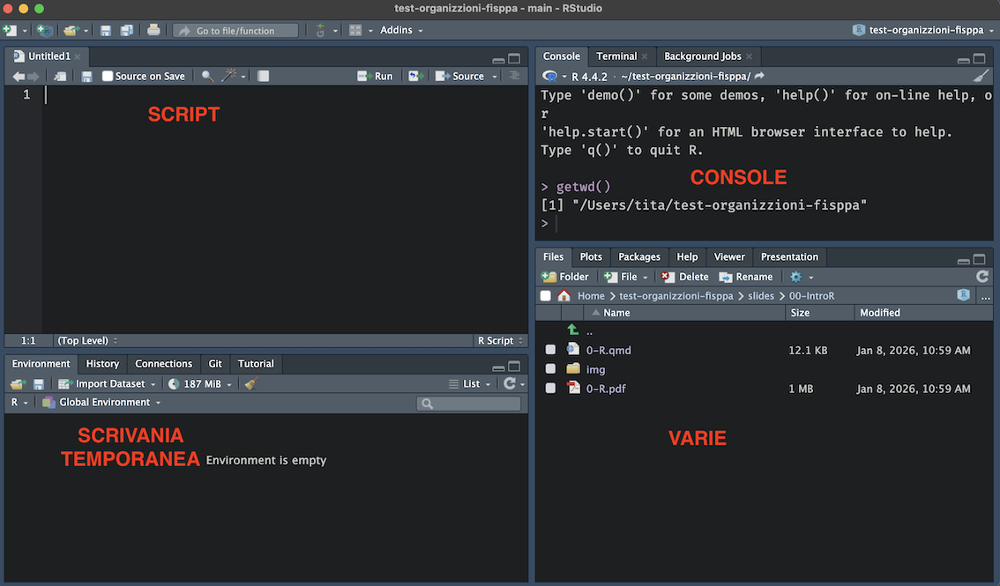
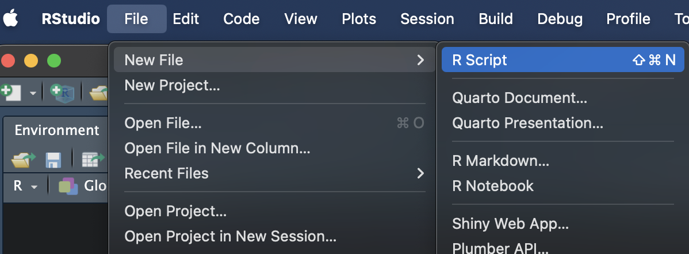
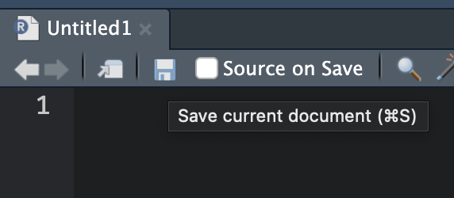
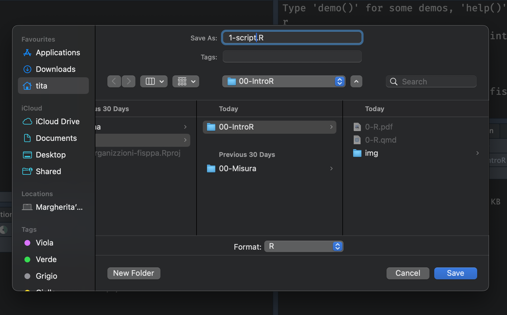
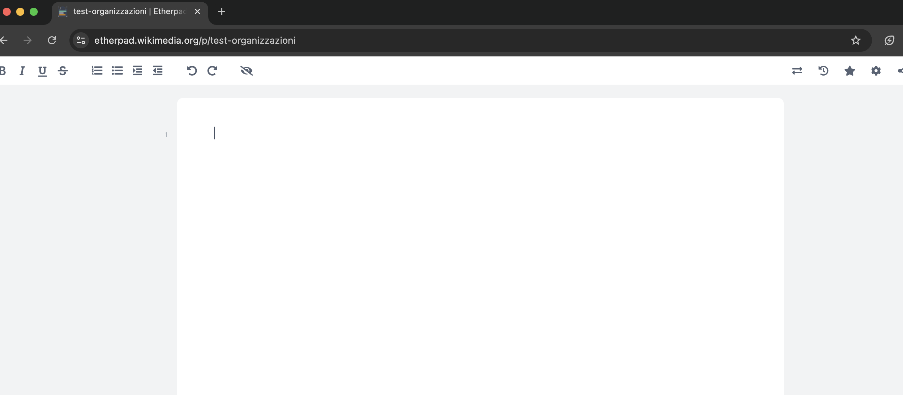

# assegno ad x il valore 30
x = 30editor_options: chunk_output_type: console execute: echo: true ###
Introduzione
R è un linguaggio di programmazione fortemente votato alla statistica, gestione di dati e visualizzazione.
E’ nato nel 1993 da Ross Ihaka e Robert Gentleman.
E’ un software completamente open-source e gratuito in continua evoluzione e cambiamento.

Perchè R?
Un software si definisce open-source quando il codice sorgente è disponibile a tutti per essere modificato, aggiornato e controllato.
R è sia open-source che gratuito e vanta una community estremamente attiva, come spesso accade con tutti i progetti open-source e in generale i linguaggi di programmazione.
Il principale “concorrente” di R è sicuramente Python che offre un ambiente altrettanto potente, sviluppato e attivo.
Non è facile (e forse non è possibile) capire quale sia il migliore.
In ogni caso, una volta imparato R, imparare Python sarà molto semplice.
Nell’ambito della statistica ci sono vari software non open-source ed a pagamento come:
- Statistica
- SPSS
- STATA
- SAS
Sono degli ottimi software ma:
- Non forniscono conoscenze trasversali
- Siete legati ad uno specifico ambiente
- Le licenze possono costare molto
- La community non è altrettanto attiva (non open-source)
Ci sono degli ottimo software open-source basati su R come:
Imparare in linguaggio come R vi permette di conoscere uno strumento molto potente ma anche di imparare:
- Ragionare e risolvere problemi con il codice
- Trasferire quello che avete imparato ad altri linguaggi
- Essere sempre autonomi e non legati ad uno specifico ambiente
- Avere una skill realmente di valore
Installare R e R-Studio
Entrambi vanno installati separatamente e la procedura varia a seconda del proprio sistema operativo.
Se non l’avete già installato, seguite la procedura spiegata a questo link: https://posit.co/download/rstudio-desktop/
Se non volete/non riuscite nell’installazione, potete accedere ad R-studio attraverso il server: https://posit.cloud/ (collegatevi attraverso la mail unipd)
Come lavorare in R

Environment. La vostra scrivania quando lavorate in R. Contiene tutti gli oggetti (variabili) creati durante la sessione di lavoro.
Script. File di testo dove il codice viene salvato e puo essere lanciato in successione. Nello script è possibile combinare codice e commenti (#)
Working Directory. La posizione (cartella) sul vostro PC dove R sta lavorando e nella quale R si aspetta di trovare i vostri file, se non specificato altrimenti.
console vs. script
Console
I comandi nella console vengono eseguiti e non salvati
Per eseguire il comando \(\rightarrow\) Invio
L’output è immediato ed appare nella console
Script
è possibile salvare gli script con tutti i comandi salvati
Per eseguire il comando \(\rightarrow\) Ctrl + Invio (cmd + Enter)
L’output è restituito nella console
Working Directory
Dove sta lavorando R ?
getwd()[1] "/Users/tita/test-organizzioni-fisppa/slides/00-IntroR"(Se voglio cambiare la working directory, posso utilizzare il comando setwd)
setwd('/Users/tita/Desktop')Path Assoluto
|- Users
|
|- tita
|
|- test-organizzioni-fisppa
|
|-slides
|
|-00-IntroRIo sto lavorando dentro la cartella 00-IntroR.
Dato che sto lavorando dentro la cartella, se voglio caricare un file che si trova dentro questa cartella posso scrivere semplicemente il nome del file tra virgolette, ed utilizzare per esempio la funzione read.csv:
data = read.csv("prova.csv")Se il file si trova in una sottocartella (es. data), devo aggiungere quest’informazione al path:
data = read.csv("data/prova.csv")N.B. Per specificare il path scrivere / non \
Creiamo uno script:

Salviamo:


Oggetti
Tutto quello che possiamo creare in R viene definito oggetto (e.g., numeri, vettori, matrici, funzioni).
numero = 4; numero[1] 4vettore = c(1,2,3,4); vettore[1] 1 2 3 4matrice = matrix(nrow = 2, ncol = 2, data = vettore); matrice [,1] [,2]
[1,] 1 3
[2,] 2 4Creare/nominare oggetti
Gli oggetti si possono creare e tramite il comando <- oppure =
x1 = 3 # nome = oggetto
x1[1] 3x2 =3 # nome =oggetto
x2 [1] 3x1 == x2 # i due oggetti sono identici?[1] TRUEPrincipali tipi di dato
character: Stringhe di caratteri i cui valori alfanumerici vengono delimitati dalle doppie vigolette “Hello world!” o virgolette singole ‘Hello world!’numeri: interi e/o decimali
A = 12.8 # variabile numerica
nome = "giorgio" # variabile character
b1 = c(12, 0.3, 5, 778.3) # vettore numerico
Nomi3 = c("giorgio", "ugo", "anna") # vettore characterRegole sulla denominazione di oggetti
- Deve iniziare con una lettera e può contenere lettere, numeri, underscore ( _ ), o punti (.).
- Potrebbe anche iniziare con un punto (.) ma in tal caso non può essere seguito da un numero.
.3 = 3 Error in `0.3 = 3`:
! invalid (do_set) left-hand side to assignment.x = 3Non deve contenere caratteri speciali come #, &, $, ?, etc.
Non deve essere una parola riservata ovvero quelle parole che sono utilizzate da R con un significato speciale (?reserved).
TRUE = 3Error in `TRUE = 3`:
! invalid (do_set) left-hand side to assignmentif = 3Error in parse(text = input): <text>:1:4: unexpected '='
1: if =
^Ci sono alcuni nomi che non sono proibiti ma sono sconsigliati
T[1] TRUEF[1] FALSEsum(2,3)[1] 5sum = 4Tra i diversi linguaggi, le convenzioni di denominazione per i nomi di variabili più lunghi e composti da più parole privilegiano snake_case (ad esempio, “my_data”) o camelCase (ad esempio, “myData”), e abbreviazioni dove appropriato (ad esempio, “unipdData” meglio di “university_of_padova_dataset”).
R è case-sensitive!
Nome = "Margherita"
nome = "margherita"
Nome[1] "Margherita"nome[1] "margherita"Nome == nome[1] FALSEDove vengono salvati gli oggetti?
Di default gli oggetti sono creati nel global environment accessibile con ls() o visibile in R Studio con anche alcune informazioni aggiuntive:

Possiamo eliminare un oggetto presente nel nostro enviroment attraverso il comando rm("nomeoggetto").
E’ possibile anche pulire completamente/svuotare il nostro enrivoment attraverso il comando rm(list = ls()).
Funzioni
Tutto quello che facciamo in R è chiamare funzioni su oggetti.
Le funzioni ci permettono di creare e modificare oggetti.
vettore[1] 1 2 3 4mean(x = vettore)[1] 2.5Funzioni matematiche di base
Possiamo pensare alle funzioni in R in modo analogo alle classiche funzioni matematiche. Dati dei valori in input, le funzioni eseguono dei specifici calcoli e restituiscono in output il risultato ottenuto.

Argomenti
Gli argomenti delle funzioni sono quelli che da utenti dobbiamo conoscere ed impostare nel modo corretto per fare in modo che la funzioni faccia quello per cui è stata pensata. Nell’esempio precedente l’unico argomento era x. Vediamo invece l’help della funzione mean().
Per impostare questi argomenti ci sono 2 regole:
- l’ordine non conta SE DEFINISCO NOME DELL’ARGOMENTO con
x = vettore,na.rm = TRUE, etc. - l’ordine conta SE NON DEFINISCO IL NOME DELL’ARGOMENTO. Posso quindi omettere
argomento = valorema devo rispettare l’ordine con cui è stata scritta la funzione.
In questo caso proviamo ad usare la funzione mean():
myvec = rnorm(n = 1000, mean = 1, sd = 1)
# x definito,trim e na.rm non definito, quindi uguali a?
mean(x = myvec) [1] 0.9816929?meanmean(x = myvec, na.rm = TRUE) # x definito, na.rm definito[1] 0.9816929mean(myvec, TRUE) # cosa succede?Error in `mean.default()`:
! 'trim' must be numeric of length onePackages
In R è possibile installare e caricare pacchetti aggiuntivi che non fanno altro che rendere disponibili librerie di funzioni create da altri utenti. Per utilizzare un pacchetto:
Installare il pacchetto con
install.packages("nomepacchetto")Caricare il pacchetto con
library(nomepacchetto)Accedere ad una funzione senza caricare il pachetto
nomepacchetto::nomefunzione(). Utile se serve solo una funzione o ci sono conflitti)
Packages

Operatori
Operatori Matematici
Funzione | Cosa fa? | Esempio | Risultato |
|#########-|###############–|############-|#########–| | + | addizione | 5.4 + 6.1 | 11.5 | | - | sottrazione | 9 - 4.3 | 4.7 | | * | moltiplicazione | 7 * 1.4 | 9.8 | | / | divisione | 9/3 | 3 | | %% | resto | 9%%2 | 1 | | ^ | potenza | 15 ^ 2 | 225 |
Funzione | Cosa fa? | Esempio | Risultato |
|#########-|########################|##################-|#########–| | abs | valore assoluto | abs(-8) | 8 | | sqrt | radice quadrata | sqrt(225) | 15 | | exp | funzione esponenziale | exp(0) | 1 | | log | logaritmo naturale | log(1) | 0 | | round | arrotondamento, intero | round(1.738) | 2 | | round | arrotondamento | round(1.738, 2) | 1.74 |
Operazioni Matematiche
L’ordine delle operazioni in R segue le regole della matematica.
Esempi
# Senza parentesi
1 + 2 * 3[1] 7# Con le parentesi
(1 + 2) * 3[1] 9Operatori Relazionali
In R è possibile valutare se una data relazione è vera o falsa. R valuterà le proposizioni e ci restituirà il valore TRUE se la proposizione è vera oppure FALSE se la proposizione è falsa.
+###############+##################-+##################-+###############+ | Funzione | Nome | Esempio | Risulato | +===============+===================+===================+===============+ | == | uguale | 30 == 30 | TRUE | +###############+##################-+##################-+###############+ | != | diverso | 30 != 30 | FALSE | +###############+##################-+##################-+###############+ | >/>= | maggiore/o uguale | 30 > 10 | TRUE | | | | | | | | | 30 >= 10 | TRUE | +###############+##################-+##################-+###############+ | </<= | minore/o uguale | 30 < 10 | FALSE | | | | | | | | | 10 <= 10 | TRUE | +###############+##################-+##################-+###############+ | %in% | inclusione | 10%in%c(1,2,10) | TRUE | +###############+##################-+##################-+###############+
Non vale solo per i numeri!
Nome = "Margherita"
nome = "margherita"
Nome == nome[1] FALSE
PS. Ricordatevi che = è diverso da ==
Operatori Logici
In R è possibile congiungere più relazioni per valutare una desiderata proposizione.
x = 30 #Assegnamo a x il valore 30.Funzione | Nome | Esempio | Risulato |
|#########-|########################|###############|#########-| | & | Congiunzione | x>25 & x<60 | TRUE | | | | Disgiunzione Inclusiva | x>25 | x>60 | TRUE | | ! | Negazione | !(x<18) | TRUE |
x = 30 #Assegnamo a x il valore 30.
x[1] 30x>25 & x>60[1] FALSEx>25 | x>60[1] TRUE!(x>18)[1] FALSER ed errori
In R gli errori sono:
- inevitabili
- parte del codice stesso
- educativi
Ci sono diversi livelli di allerta quando scriviamo codice:
messaggi: la funzione ci restituisce qualcosa che è utile sapere, ma tutto lisciowarnings: la funzione ci informa di qualcosa di potenzialmente problematico, ma (circa) tutto liscioerror: la funzione non solo ci informa di un errore ma le operazioni richieste non sono state eseguite
Come risolvere?
- Capire il messaggio
- Leggere la documentazione della funzione
- Cercare il messaggio su internet
- Chiedere aiuto nei forum dedicati
Ogni funzione ha una pagina di documentazione accessibile con
?nomefunzione,??nomefunzioneoppurehelp(nomefunzione)Possiamo cercare anche la documentazione del pacchetto
Possiamo cercare su internet il nome della funzione o l’eventuale messaggio che riceviamo
Facciamo un po’ di pratica! {style=“text-align: center;”}
Aprite e tenete aperto questo link: https://etherpad.wikimedia.org/p/test-organizzazioni

Vettori
I vettori sono una struttura dati unidimensionale e sono la più semplice presente in R.

Caratteristiche di un vettore
la lunghezza: il numero di elementi da cui è formato il vettore
la tipologia: la tipologia di dati da cui è formato il vettore. Un vettore infatti deve esssere formato da elementi tutti dello stesso tipo!
Caratteristiche degli elementi di un vettore
un valore: il valore dell’elemento che può essere di qualsiasi tipo ad esempio un numero o una serie di caratteri
un indice di posizione: un numero intero positivo che identifica la sua posizione all’interno del vettore.
Creare un vettore
I vettori si possono creare attraverso il comando c(), indicando tra le parentesi i valori degli elementi nella sucessione desiderata e separati da una virgola.
num_vect = c(1,2,3,4)char_vect = c("R","R","R","ok")Tiplogia di vettore
La tipologia di dati da cui è formato il vettore.
class(num_vect)[1] "numeric"class(char_vect)[1] "character"Tiplogia di vettore
Un vettore deve esssere formato da elementi tutti dello stesso tipo!
wrong = c(1,2,3,"non so", 4)
class(wrong) [1] "character"wrong[1] "1" "2" "3" "non so" "4" Altrimenti si “rischia” che tutto venga trasformato a carattere.
correct = c(1,2,3,NA, 4)
class(correct) [1] "numeric"correct[1] 1 2 3 NA 4is.* & as.*
Possiamo testare o convertire (quando possibile) la tipologia del vettore attraverso queste funzioni is. & as.
Vettore di tipo character
char_vect[1] "R" "R" "R" "ok"is.character(char_vect)[1] TRUEas.numeric(char_vect) #!!Warning: NAs introduced by coercion[1] NA NA NA NAis.* & as.*
Vettore di tipo numeric
num_vect[1] 1 2 3 4is.numeric(num_vect)[1] TRUEas.character(num_vect) #!![1] "1" "2" "3" "4"is.* & as.*
Vettore di tipo logical
logi_vect = c(TRUE,FALSE,TRUE)
is.logical(logi_vect)[1] TRUEas.numeric(logi_vect)as.numeric(logi_vect)[1] 1 0 1Indicizzazione
Possiamo selezionare, eliminare, estrarre elementi semplicemente usando l’indice di posizione tramite le parentesi quadre vettore [pos] .
# Creo un vettore formato da 10 numeri casuali
my_vect = round(runif(n = 10,min = 1, max = 100))
my_vect [1] 4 17 64 96 20 52 35 85 29 1my_vect[1] # estraggo il primo elemento[1] 4my_vect[1:5] # estraggo i primi 5 elementi[1] 4 17 64 96 20my_vect[c(1,4,2,9)] # estraggo elementi a scelta[1] 4 96 17 29Inidicizzazione Negativa
Allo stesso modo possiamo decidere di estrarre tutti gli elementi del vettore eccetto alcuni
my_vect[-c(1)] #tutti tranne il primo elemento[1] 17 64 96 20 52 35 85 29 1my_vect[-c(1:9)] #tutti tranne i primi 10[1] 1Indicizzazione Logica
Possiamo selezionare elementi dal vettore basandoci su specifiche condizioni logiche: TRUE e FALSE.
numeri = 1:7; numeri[1] 1 2 3 4 5 6 7numeri>2 & numeri<5[1] FALSE FALSE TRUE TRUE FALSE FALSE FALSEnumeri[numeri>2 & numeri<5][1] 3 4Operazioni matematiche sui vettori
Possiamo eseguire operazioni sui vettori, ed applicare la stessa operazione a tutti gli elementi del vettore (element-wise)
# ?rep
new_vect = rep(2:4, each = 2)
new_vect[1] 2 2 3 3 4 4# potete svolgere qualsiasi operazione
new_vect/2[1] 1.0 1.0 1.5 1.5 2.0 2.0Fattori
I fattori sono una tipologia di dato peculiare e per quanto simile a semplici characters in realtà sono un tipo di vettore integer con delle proprietà aggiuntive.
Creare un fattore: as.factor
char_vect = rep(c("hello","ciao", "hola"), each = 2)
char_vect[1] "hello" "hello" "ciao" "ciao" "hola" "hola" my_fact = as.factor(char_vect)
my_fact[1] hello hello ciao ciao hola hola
Levels: ciao hello holaCreare un fattore: factor()
my_fact = factor(x = rep(c("hello","ciao", "hola"), each = 2),
levels = c("hello","ciao","hola"),
labels = c("hello","ciao","hola"))
my_fact[1] hello hello ciao ciao hola hola
Levels: hello ciao holaI fattori permettono di avere dei livelli levels() come metadati,
levels(my_fact)[1] "hello" "ciao" "hola" A prescindere da quali siano effettivamente presenti nel vettore. Per esempio se creo un fattore composto solo dagli elementi di my_fact diversi da ciao:
my_fact2 = my_fact[my_fact!="ciao"]I livelli di my_fact2 saranno gli stessi di my_fact (“ciao” incluso) anche se “ciao” non è presente come osservazione:
my_fact2[1] hello hello hola hola
Levels: hello ciao holalevels(my_fact2)[1] "hello" "ciao" "hola" E’ possibile però eslcudere i livelli non più utili attraverso il comando droplevels():
# come sarebbe my_fact2?
droplevels(my_fact2) [1] hello hello hola hola
Levels: hello hola# modifico my_fact2 eliminando i livelli inutili
my_fact2 = droplevels(my_fact2)
my_fact2[1] hello hello hola hola
Levels: hello holaMatrici
Le matrici sono una struttura dati bidimensionale (caratterizzate da 2 dimensioni dim() ) dove il numero di righe rappresenta la dimensione 1 e il numero di colonne la dimensione 2.
my_mat = matrix(data = 1:10, nrow = 2, ncol = 5)
my_mat [,1] [,2] [,3] [,4] [,5]
[1,] 1 3 5 7 9
[2,] 2 4 6 8 10Matrici
my_mat = matrix(data = 1:10, nrow = 2,
ncol = 5)
nrow(my_mat)[1] 2ncol(my_mat)[1] 5Matrici - Caratteristiche
Possono contenere una sola tipologia di dati
Essendo bidimensionali, abbiamo bisogno di due indici di posizione (righe e colonne) per identificare un elemento
Possono essere viste come un insieme di singoli vettori
Matrici - Caratteristiche
Il numero di righe e colonne non deve essere lo stesso necessariamente (matrice quadrata) ma il numero di righe deve essere compatibile con il vettore data:
matrix(data = 1:10, ncol = 3, nrow = 3)Warning in matrix(data = 1:10, ncol = 3, nrow = 3): data length [10] is not a
sub-multiple or multiple of the number of rows [3] [,1] [,2] [,3]
[1,] 1 4 7
[2,] 2 5 8
[3,] 3 6 9Cosa fa R di default?
matrix(data = 1:10, ncol = 3, nrow = 3) [,1] [,2] [,3]
[1,] 1 4 7
[2,] 2 5 8
[3,] 3 6 9matrix(data = 1:2, ncol = 3, nrow = 3) [,1] [,2] [,3]
[1,] 1 2 1
[2,] 2 1 2
[3,] 1 2 1warnings: la funzione ci informa di qualcosa di potenzialmente problematico, ma (circa!!) tutto liscio
Matrici - Indicizzazione
Per identificare uno o più elementi nella matrice abbiamo bisogno di indici/e di riga e/o colonna separati da virgola, sempre con le parentesi quadre: matrice[riga, colonna]
my_mat [,1] [,2] [,3] [,4] [,5]
[1,] 1 3 5 7 9
[2,] 2 4 6 8 10my_mat[1,1][1] 1E’ possibile anche selezionare un’intera riga o colonna
my_mat[1,][1] 1 3 5 7 9my_mat[,1][1] 1 2Indicizzazione logica
my_mat>2 [,1] [,2] [,3] [,4] [,5]
[1,] FALSE TRUE TRUE TRUE TRUE
[2,] FALSE TRUE TRUE TRUE TRUEmy_mat [,1] [,2] [,3] [,4] [,5]
[1,] 1 3 5 7 9
[2,] 2 4 6 8 10# Tutti gli elementi maggiori di due
my_mat[my_mat>2][1] 3 4 5 6 7 8 9 10Vettori e Matrici
I vettori si creano attraverso la funzione c() e possono essere concatenati tra loro sempre attraverso la stessa funzione:
my_vect1 = c(1:4)
my_vect2 = c(5:10)
my_vect12 = c(my_vect1,my_vect2)
my_vect12 [1] 1 2 3 4 5 6 7 8 9 10my_mat1 = matrix(data = 1:4,nrow = 2, ncol = 2)
my_mat1 [,1] [,2]
[1,] 1 3
[2,] 2 4my_mat2 = matrix(data = 5:8,nrow = 2, ncol = 2)
my_mat2 [,1] [,2]
[1,] 5 7
[2,] 6 8Le matrici possono essere unite tra loro attraverso i comandi:
cbind()
cbind(my_mat1, my_mat2) [,1] [,2] [,3] [,4]
[1,] 1 3 5 7
[2,] 2 4 6 8rowbind()
rbind(my_mat1, my_mat2) [,1] [,2]
[1,] 1 3
[2,] 2 4
[3,] 5 7
[4,] 6 8Cosa notate di “strano”?
Operazioni con le matrici
Come per i vettori, anche alle matrici si possono applicare operazioni matematiche:
my_mat = matrix(data = 1:4,nrow = 2, ncol = 2)
# elemet-wise
my_mat*my_mat [,1] [,2]
[1,] 1 9
[2,] 4 16Operazioni con le matrici
Come per i vettori, anche alle matrici si possono applicare operazioni matematiche:
# Prodotto matriciale
my_mat%*%my_mat [,1] [,2]
[1,] 7 15
[2,] 10 22# (1*1 + 3*2) , (1*3 + 3*4)
# (2*1 + 4*2) , (2*3 + 4*4)Dataframe
Il dataframe è la struttura più “complessa”, utile e potente di R.
- ogni elemento è un vettore con un nome associato (aka una colonna)
- ogni colonna deve avere lo stesso numero di elementi
- di conseguenza ogni riga ha lo stesso numero di elementi (struttura rettangolare)
Creazione
Si creano attraverso il comando data.frame
# Creo un dataframe con 3 colonne
my_df = data.frame( numeri = 1:4, lettere = letters[1:4],
normale = rnorm(n = 4, mean = 0, sd = 1))
my_df numeri lettere normale
1 1 a 0.5473902
2 2 b -0.1724206
3 3 c 1.5893667
4 4 d 1.3317090Attributi
Il dataframe ha sia gli attributi della lista ovvero i names ma anche gli attributi della matrice ovvero le dimensioni (righe e colonne)
attributes(my_df)$names
[1] "numeri" "lettere" "normale"
$class
[1] "data.frame"
$row.names
[1] 1 2 3 4dim(my_df)[1] 4 3Possiamo utlizzare le funzioni names() , dim(), nrow(), ncol()… per ottenere informazioni sulle caratteristiche del dataframe. La funzione più utile è str() poichè ci restituisce una veloce overview della struttura del dataframe: dimensioni, tipi di variabili,…
str(my_df) 'data.frame': 4 obs. of 3 variables:
$ numeri : int 1 2 3 4
$ lettere: chr "a" "b" "c" "d"
$ normale: num 0.547 -0.172 1.589 1.332Indicizzazione
my_df[1] # estraggo un data.frame 5x1 numeri
1 1
2 2
3 3
4 4my_df[[1]] # estraggo la prima colonna del data.frame[1] 1 2 3 4my_df[1,1] # estraggo il primo elemento della prima colonna del data.frame[1] 1Indicizzazione $
my_df$numeri # estraggo la prima colonna del data.frame[1] 1 2 3 4my_df$numeri[1] # estraggo il primo elemento della prima colonna del data.frame[1] 1Indicizzazione - Operatori relazionali
Una delle operazioni più comuni che dovrete affrontare sarà sicuramente quella di estrarre/valutare un sottoinsieme di valori presenti nel vostro dataset:
my_df numeri lettere normale
1 1 a 0.5473902
2 2 b -0.1724206
3 3 c 1.5893667
4 4 d 1.3317090# includo solo le righe in cui alla colonna1 i valori sono maggiori di 2
my_df[my_df$numeri > 2, ] numeri lettere normale
3 3 c 1.589367
4 4 d 1.331709my_df[my_df[1] > 2, ] numeri lettere normale
3 3 c 1.589367
4 4 d 1.331709Esempi
my_df numeri lettere normale
1 1 a 0.5473902
2 2 b -0.1724206
3 3 c 1.5893667
4 4 d 1.3317090my_df[my_df$numeri > 2 & my_df$numeri < 4, ] numeri lettere normale
3 3 c 1.589367my_df[my_df$numeri== 2, 2]character(0)my_df[my_df$col1== 2, "col2"]NULLIndicizzazione subset()
str(iris)'data.frame': 150 obs. of 5 variables:
$ Sepal.Length: num 5.1 4.9 4.7 4.6 5 5.4 4.6 5 4.4 4.9 ...
$ Sepal.Width : num 3.5 3 3.2 3.1 3.6 3.9 3.4 3.4 2.9 3.1 ...
$ Petal.Length: num 1.4 1.4 1.3 1.5 1.4 1.7 1.4 1.5 1.4 1.5 ...
$ Petal.Width : num 0.2 0.2 0.2 0.2 0.2 0.4 0.3 0.2 0.2 0.1 ...
$ Species : Factor w/ 3 levels "setosa","versicolor",..: 1 1 1 1 1 1 1 1 1 1 ...subset(iris, subset = Species == "setosa" & Petal.Length > 1.7) Sepal.Length Sepal.Width Petal.Length Petal.Width Species
25 4.8 3.4 1.9 0.2 setosa
45 5.1 3.8 1.9 0.4 setosaEquivalente a:
iris[iris$Species == "setosa" & iris$Petal.Length > 1.7,] Sepal.Length Sepal.Width Petal.Length Petal.Width Species
25 4.8 3.4 1.9 0.2 setosa
45 5.1 3.8 1.9 0.4 setosasubset(df, select = ...)
E’ possibile anche selezionare colonne piuttosto che righe attraverso l’argomento select:
subset(iris, select = c(Sepal.Length, Species))#visualizzo le prime due righe attraverso il comando head
head(subset(iris, select = c(Sepal.Length, Species)), n = 3) Sepal.Length Species
1 5.1 setosa
2 4.9 setosa
3 4.7 setosasubset(df, subset = ..., select = ...)
Possiamo anche combinare le due cose:
subset(iris, subset = Species == "setosa" & Sepal.Length > 4, select = c(Sepal.Length, Species))head(subset(iris, subset = Species == "setosa" & Sepal.Length > 4, select = c(Sepal.Length, Species)), n = 3) Sepal.Length Species
1 5.1 setosa
2 4.9 setosa
3 4.7 setosaLa maggiorparte delle volte vi troverete ad accedere alle variabili tramite l’operatore $. Questo comando può essere utilizzato anche per creare una nuova variabile…
# creo una variablie che è la somma di Length e Width
iris$somma = iris$Sepal.Length + iris$Sepal.Width
str(iris)'data.frame': 150 obs. of 6 variables:
$ Sepal.Length: num 5.1 4.9 4.7 4.6 5 5.4 4.6 5 4.4 4.9 ...
$ Sepal.Width : num 3.5 3 3.2 3.1 3.6 3.9 3.4 3.4 2.9 3.1 ...
$ Petal.Length: num 1.4 1.4 1.3 1.5 1.4 1.7 1.4 1.5 1.4 1.5 ...
$ Petal.Width : num 0.2 0.2 0.2 0.2 0.2 0.4 0.3 0.2 0.2 0.1 ...
$ Species : Factor w/ 3 levels "setosa","versicolor",..: 1 1 1 1 1 1 1 1 1 1 ...
$ somma : num 8.6 7.9 7.9 7.7 8.6 9.3 8 8.4 7.3 8 ...Si applicano gli stessi concetti che abbiamo visto per i vettori, potete quindi sia creare che modificare variabili.
my_df = data.frame(num = 1:4, let = letters[1:4])
my_df num let
1 1 a
2 2 b
3 3 c
4 4 d# Modfico la variabile num aggiungendo 1
my_df$num = my_df$num+1
# Creo una terza variabile composta dalla varibile num e let
my_df$both = paste(my_df$num,my_df$let, sep = "_") # ?paste
str(my_df)'data.frame': 4 obs. of 3 variables:
$ num : num 2 3 4 5
$ let : chr "a" "b" "c" "d"
$ both: chr "2_a" "3_b" "4_c" "5_d"Combinare Dataframes
Essendo simili a delle matrici, i dataframe si possono combinare tra loro attraverso le funzioni rbind():
# primo dataframe
str(my_df)'data.frame': 4 obs. of 3 variables:
$ num : num 2 3 4 5
$ let : chr "a" "b" "c" "d"
$ both: chr "2_a" "3_b" "4_c" "5_d"# creo un secondo dataframe
my_df2 = data.frame(num = 4:7, lett = letters[1:4],
both = paste(4:7,letters[1:4], sep = "_"))
str(my_df2)'data.frame': 4 obs. of 3 variables:
$ num : int 4 5 6 7
$ lett: chr "a" "b" "c" "d"
$ both: chr "4_a" "5_b" "6_c" "7_d"Unisco i due dataframes
I dataframes devono avere lo stesso numero di colonne
I nomi delle colonne devono essere identici
my_df3 = rbind(my_df,my_df2) Error in `match.names()`:
! names do not match previous namesstr(my_df)'data.frame': 4 obs. of 3 variables:
$ num : num 2 3 4 5
$ let : chr "a" "b" "c" "d"
$ both: chr "2_a" "3_b" "4_c" "5_d"str(my_df2)'data.frame': 4 obs. of 3 variables:
$ num : int 4 5 6 7
$ lett: chr "a" "b" "c" "d"
$ both: chr "4_a" "5_b" "6_c" "7_d"Sistemo i nomi
names(my_df2)[1] "num" "lett" "both"names(my_df)[1] "num" "let" "both"# voglio che i names di my_df2 corrispondano ai names di my_df
names(my_df2) = names(my_df)
my_df3 = rbind(my_df,my_df2)
str(my_df3)'data.frame': 8 obs. of 3 variables:
$ num : num 2 3 4 5 4 5 6 7
$ let : chr "a" "b" "c" "d" ...
$ both: chr "2_a" "3_b" "4_c" "5_d" ...Potrebbe anche capitarvi di dover raccogliere differenti tipi di dato dallo stesso partecipante, e successivamente combinare le informazioni raccolte…
df_rt = data.frame(subj = factor(rep(c("caio","tizio"),each = 400)),
cond = factor(rep(c("easy","hard"),
each = 200, times = 2)),
rt = c(rlnorm(n = 400, meanlog = -1, sdlog = .25),
rlnorm(n = 400, meanlog = -.7, sdlog =.3)))Dataframe contente l’età:
df_age = data.frame(subj = factor(c("caio","tizio")), age = c(20,3))str(df_rt) # struttura dataframe tempi di reazione'data.frame': 800 obs. of 3 variables:
$ subj: Factor w/ 2 levels "caio","tizio": 1 1 1 1 1 1 1 1 1 1 ...
$ cond: Factor w/ 2 levels "easy","hard": 1 1 1 1 1 1 1 1 1 1 ...
$ rt : num 0.39 0.41 0.376 0.452 0.439 ...head(df_rt) subj cond rt
1 caio easy 0.3897040
2 caio easy 0.4095024
3 caio easy 0.3764494
4 caio easy 0.4516103
5 caio easy 0.4391631
6 caio easy 0.3172780str(df_age) # struttura dataframe età'data.frame': 2 obs. of 2 variables:
$ subj: Factor w/ 2 levels "caio","tizio": 1 2
$ age : num 20 3head(df_age) subj age
1 caio 20
2 tizio 3In questo caso, è possibile utilizzare la funzione merge():
df_all_1 = merge(x = df_rt, y = df_age, by="subj")
str(df_all_1)'data.frame': 800 obs. of 4 variables:
$ subj: Factor w/ 2 levels "caio","tizio": 1 1 1 1 1 1 1 1 1 1 ...
$ cond: Factor w/ 2 levels "easy","hard": 1 1 1 1 1 1 1 1 1 1 ...
$ rt : num 0.39 0.41 0.376 0.452 0.439 ...
$ age : num 20 20 20 20 20 20 20 20 20 20 ...la funzione _join():
library(dplyr) # carico il pacchetto dplyr
df_all_2 = left_join(x = df_rt, y = df_age, by = c("subj")) # esistono anche right_join; full_join
str(df_all_2)'data.frame': 800 obs. of 4 variables:
$ subj: Factor w/ 2 levels "caio","tizio": 1 1 1 1 1 1 1 1 1 1 ...
$ cond: Factor w/ 2 levels "easy","hard": 1 1 1 1 1 1 1 1 1 1 ...
$ rt : num 0.39 0.41 0.376 0.452 0.439 ...
$ age : num 20 20 20 20 20 20 20 20 20 20 ...Esportazione e importazione dati
In R è possibile importare dati in molti formati differenti, più comunemente vi troverete ad importare dati .csv oppure .xlsx.
Qui per esempio, esporto i dataframe in tre formati differenti…
library(readr) # carico il pacchetto readr
library(writexl) # carico il pacchetto writexl
write.csv(df_rt, file = "data/df_rt.csv",row.names = FALSE)
write_xlsx(df_age, path = "data/df_age.xlsx")
save(df_age, file = "data/df_age.rda") # formato RImporto
library(readxl) # carico il pacchetto readxl
df_rt_impo = read_csv("data/df_rt.csv") #utilizza il pacchetto readr
df_age_impo = read_xlsx("dat/df_age.xlsx")
load(file ="data/df_age.rda") # formato RRows: 800 Columns: 3
── Column specification ────────────────────────────────────────────────────────
Delimiter: ","
chr (2): subj, cond
dbl (1): rt
ℹ Use `spec()` to retrieve the full column specification for this data.
ℹ Specify the column types or set `show_col_types = FALSE` to quiet this message.Controllo la struttura ed il tipo di dati
str(df_rt_impo)spc_tbl_ [800 × 3] (S3: spec_tbl_df/tbl_df/tbl/data.frame)
$ subj: chr [1:800] "caio" "caio" "caio" "caio" ...
$ cond: chr [1:800] "easy" "easy" "easy" "easy" ...
$ rt : num [1:800] 0.39 0.41 0.376 0.452 0.439 ...
- attr(*, "spec")=
.. cols(
.. subj = col_character(),
.. cond = col_character(),
.. rt = col_double()
.. )
- attr(*, "problems")=<externalptr> df_rt_impo$subj = as.factor(df_rt_impo$subj)
df_rt_impo$cond = as.factor(df_rt_impo$cond)
str(df_rt_impo)spc_tbl_ [800 × 3] (S3: spec_tbl_df/tbl_df/tbl/data.frame)
$ subj: Factor w/ 2 levels "caio","tizio": 1 1 1 1 1 1 1 1 1 1 ...
$ cond: Factor w/ 2 levels "easy","hard": 1 1 1 1 1 1 1 1 1 1 ...
$ rt : num [1:800] 0.39 0.41 0.376 0.452 0.439 ...
- attr(*, "spec")=
.. cols(
.. subj = col_character(),
.. cond = col_character(),
.. rt = col_double()
.. )
- attr(*, "problems")=<externalptr> Ora però facciamo un po’ di pratica!
Aprite e tenete aperto questo link: